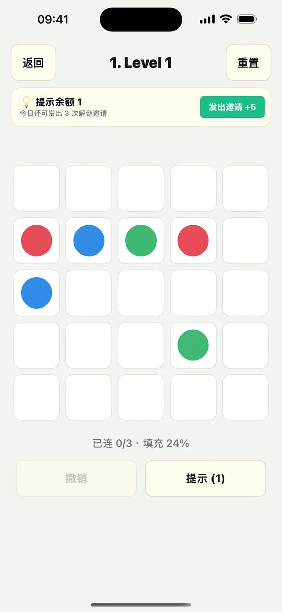
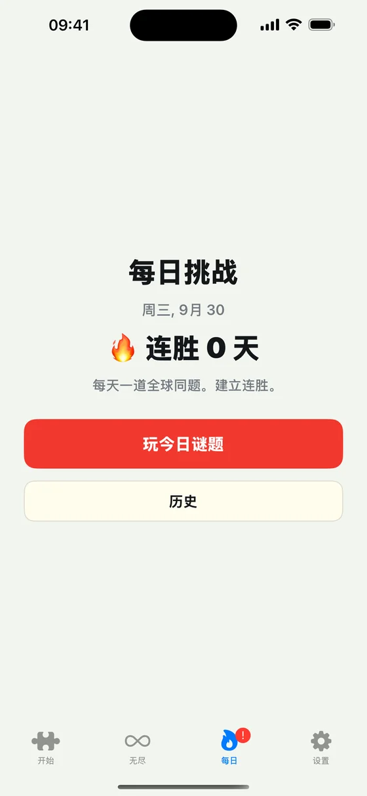

连接同色圆点
给每对圆点画出一条线路。路线不能交叉，也要给其他颜色留出空间。
iPhone 与 iPad · iOS 17 或更高版本
连接同色圆点，让路线互不交叉。铺满棋盘就能拿到完美成绩。可以玩 999 个关卡，也可以挑战每日谜题。
支持离线 · 无广告 · 可选一次性 Pro 解锁

从小棋盘开始，按自己的节奏挑战更大的棋盘。
给每对圆点画出一条线路。路线不能交叉，也要给其他颜色留出空间。
铺满整个棋盘可获得完美成绩。棋盘从 5 × 5 到 12 × 12。
挑战全球同题，卡住时使用提示，没网时也可以玩已解锁关卡。
打开每日挑战即可开始当天的谜题。完成后可以累积连胜，并在历史记录中查看成绩。

连接所有同色圆点，并让线路覆盖每一格。连通后还有空格时，可以重新调整走线。
可以，普通关卡没有计时，应用支持离线。
Pro 是可选的一次性购买。Knots 没有广告。